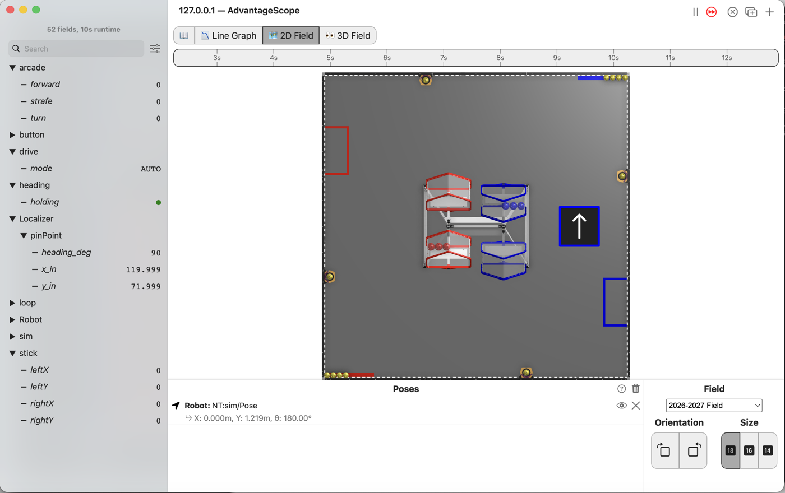
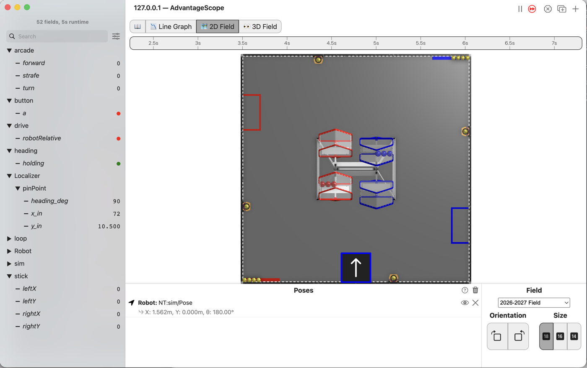

L170: press Y and the robot drives itself there¶

AdvantageScope’s 2D Field with the robot right of the middle of the field, its arrow pointing up the field, and the list showing drive/mode at AUTO, every stick at 0, and pinPoint/x_in at 119.999, y_in at 71.999 and heading_deg at 90.¶
Press Y and the robot drives itself to a spot on the field. Push any stick and the driver has it back at once.
Before you start.
L160 is done.
AdvantageScope is installed on the same laptop. No gamepad is needed until the last step.
The robot, the Driver Station, a gamepad, and about 2 m by 2 m of clear floor for the last step.
Step L170S050 is written from the code and the old l14 page. It has not been performed on a robot
yet.
The steps¶
L170S010: copy the starter into mytry¶
Copy. In lessons, click L170DriveToPoseOpMode once and copy it. Click mytry once and
paste. In the Copy Class box, click OK. If Android Studio asks whether to add the file to
Git, click Add.
Check.
mytryholdsL170DriveToPoseOpMode, and the new file is open.
L170S020: switch your copy on¶
Change. Delete the line @Disabled, under the comment that names this step.
Check.
Under the step’s comment, the next line reads
// 'public' so the robot can run this OpMode. 'public' allows access from any code.
L170S030: give Y a pose¶

AdvantageScope’s 2D Field with the robot at the bottom middle of the field, its arrow pointing up, and the list showing every stick at 0 and pinPoint/x_in at 72, y_in at 10.500 and heading_deg at 90.¶
The starter is L160’s finished OpMode, moved around a little. All the driving now sits in
driveTheRobot(), which loop() calls. Near the top are three new fields. target is the pose, at
x 120 in, y 72 in and heading 90°. drivingItself remembers whether Y sent the robot there.
bindings() runs once, when PLAY is pressed. It is the place to say what each button does.
Change. In bindings(), find the comment that names this step. Under it, type:
// When on L170S030, see
// https://msb-stitt.github.io/ftc31459-26-27-biobuzz/guide/tasks/l170.html#l170s030
// for what to do here.
buttons.whenPressed(() -> gamepad1.y, Commands.instant(() -> {
follower.hold(target);
drivingItself = true;
}));
Android Studio closes the brackets for you, as })). Type the ; after them yourself.
Commands turns red. Click it and press Option+Enter, as in L120. The popup names
com.pedropathing.ivy.commands.Commands.
() -> wraps code to run later, not now. () -> gamepad1.y is how whenPressed reads Y every
loop, and the code inside { } is what it does when Y goes down.
whenPressed runs its command once, the loop Y goes down. Holding Y does not run it again. The
command tells the follower to drive to target and stay there.
Simulator. In the Terminal, run:
./gradlew :TeamCode:simRun --args="mytry.L170DriveToPoseOpMode --y=true"
AdvantageScope. Connect to the simulator as in L020, click 2D Field, and open the
Localizer folder, then pinPoint.
Check.
The robot does not move.
x_instays at 72 andy_inat 10.5.
The follower wants to go, but every loop the sticks say stop, and since L110 the sticks win.
L170S040: let the follower drive until the driver takes over¶
driverWantsControl is in the starter. It is true when any stick is pushed past the deadband.
Change. Press Ctrl+C in the Terminal to stop the simulator. In driveTheRobot(), find the
comment that names this step. Under it, type:
boolean driverWantsControl = Math.abs(leftStickY) > band
|| Math.abs(leftStickX) > band || Math.abs(rightStickX) > band;
// When on L170S040, see
// https://msb-stitt.github.io/ftc31459-26-27-biobuzz/guide/tasks/l170.html#l170s040
// for what to do here.
if (drivingItself) {
if (!driverWantsControl) {
Tracker.publish("drive/mode", "AUTO");
drivetrain.releaseCommandedWheels();
return;
}
drivingItself = false;
follower.manual(0, 0, 0);
}
Tracker.publish("drive/mode", "DRIVER");
|| means “or”, so driverWantsControl is true when any one stick is pushed. ! means “not”, so
!driverWantsControl is true when no stick is pushed.
While the robot drives itself and no stick is pushed, releaseCommandedWheels() lets go of the
wheels, and return leaves driveTheRobot() before the sticks are read. The follower is left
driving. Once a stick is pushed, drivingItself goes back to false and follower.manual stops the
follower. The sticks drive again, from this loop on.
Simulator. Run the same command again, and connect AdvantageScope. Open the drive folder too.
Check.
modereads AUTO.The robot drives right and up the field and stops at
x_in120 andy_in72, its nose still pointing up the field. It may show 119.999 and 71.999.
L170S050: send it and then take it back¶
Robot. Stop the simulator. Send the code, and run L170 Drive To Pose from the Driver Station.
Check.
Press Y once and let go. The robot drives itself toward the middle of the field, right of where it started.
Press Y again and push the left stick while it is on its way. It stops going there, and drives the way the stick says.
No gamepad. Both runs above hold Y with --y=true and need none. With --pad, a driver can
press Y and take over with a stick; that has not been performed.
If it didn’t, and LessonsTest.l170_pressingYDrivesToAPoseAndTheDriverCanTakeOver fails with
the command is driving, not the sticks expected:<HOLD> but was:<MANUAL>, the sticks are still
driving after Y. The binding is missing, the return is missing, or the if reads
driverWantsControl without the !.
If it didn’t, and it fails with manual control returns expected:<MANUAL> but was:<HOLD>, the
follower never lets go. Either follower.manual(0, 0, 0); is missing, or the binding leaves out
drivingItself = true;, so the sticks never take the follower back.
Two lines can go missing and the test still passes. Neither has been run; both are read from the code.
Without
drivingItself = false;, a stick takes over as it should. Let go, andmodereads AUTO again while the follower, toldmanual(0, 0, 0), keeps the robot still.Without
releaseCommandedWheels(), the sticks’ last command stays on the wheels, and the follower is ignored. The--y=truerun still drove there, because Y was down from the first loop, before the sticks had set the wheels. After the driver has driven, Y would do nothing.
What you just did. The robot has two drivers now, the person and the follower, and one rule decides between them. The follower drives only when asked, and only until the person touches a stick. That is the same rule as L160, a step bigger: the person on the gamepad wins.
Where next. L180 puts every piece so far into one OpMode a driver could take to a match.